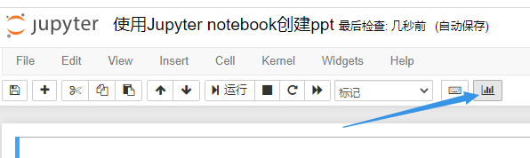
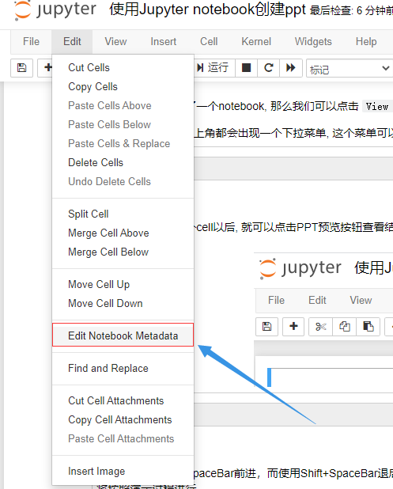

我们用jupyter可以方便的记录一些笔记, 而使用reveal.js可以创建网页版PPT, RISE插件就是将jupyter的notebook快速转换成网页PPT的工具。
如何使用jupyter notebook来写PPT
我们用jupyter可以方便的记录一些笔记, 而使用reveal.js可以创建网页版PPT, RISE插件就是将jupyter的notebook快速转换成网页PPT的工具。
安装RISE插件
使用pip可以方便的安装:
1 | pip install RISE |
安装成功以后, 我们可以在notebook界面看到这个按钮:

使用方法
幻灯片工具栏
假如你已经创建好了一个notebook, 那么我们可以点击 View -> Cell Toolbar -> 幻灯片来调出幻灯片工具栏:
这样在每一个Cell右上角都会出现一个下拉菜单, 这个菜单可以定义我们的cell会被转换成幻灯片的哪一个部分:
预览PPT
当我们设置好每一个cell以后, 就可以点击PPT预览按钮查看结果:
预览翻页
强烈建议主要使用SpaceBar前进，而使用Shift+SpaceBar退后（或幻灯片右下角的可视控制器）。无论具体显示的是什么（幻灯片，子幻灯片，片段……），都将按照演示过程进行。
相反，关于这3个结构实体，向右箭头和向左箭头可能会产生令人困惑的行为。此外，向上和向下箭头保留用于与notebook cell交互，不能用于浏览幻灯片，而是可以使用pgup和pgdown。
导出PPT
当我们自认为PPT已经做好, 可以导出来, 方便以后使用, 可以依次点击”File -> Download as -> reveal.js”, 最后我们的PPT将作为一个html文件下载下来。
自定义RISE
有很多种方法可以配置RISE, 但是我推荐使用metadata的配置方法, 我们可以在这里打开metadata的编辑器:

然后增加如下的json代码:
1 |
|
可选主题
我们可以更改PPT的主题, 选择自己喜欢的样式, reveal.js支持很多主题, 比如:
- black Black background, white text, blue links (default)
- white White background, black text, blue links
- league Gray background, white text, blue links
- beige Beige background, dark text, brown links
- sky Blue background, thin dark text, blue links
- night Black background, thick white text, orange links
- serif Cappuccino background, gray text, brown links
- simple White background, black text, blue links
- solarized Cream-colored background, dark green text, blue links
- blood Dark background, thick white text, red links
- moon Dark blue background, thick grey text, blue links
可选转场效果
- none Switch backgrounds instantly
- fade Cross fade — default for background transitions
- slide Slide between backgrounds — default for slide transitions
- convex Slide at a convex angle
- concave Slide at a concave angle
- zoom Scale the incoming slide up so it grows in from the center of the screen
修改每一张幻灯片的大小
1 | "rise": { |
设定每一张幻灯片的页眉/页脚和背景图片
1 | "rise": { |
允许滚动条和黑板功能
1 | "rise": { |
如果需要更多配置功能, 你可以直接查看reveal.js的官方文档:
https://github.com/hakimel/reveal.js
自定义样式
说实话, RISE提供的一些自定义选项还是不够用, 比如我感觉我想自主决定一些html元素的样式, 那么我们可以使用rise.css这个文件, 在notebook所在的文件夹中创建这个文件, 然后自己写一些css样式, 比如我常用的一些样式如下:
1 | .present{ |
注意
本文由jupyter notebook转换而来, 您可以在这里下载notebook
有问题可以直接在下方留言
或者给我发邮件675495787[at]qq.com
请记住我的网址: mlln.cn 或者 jupyter.cn